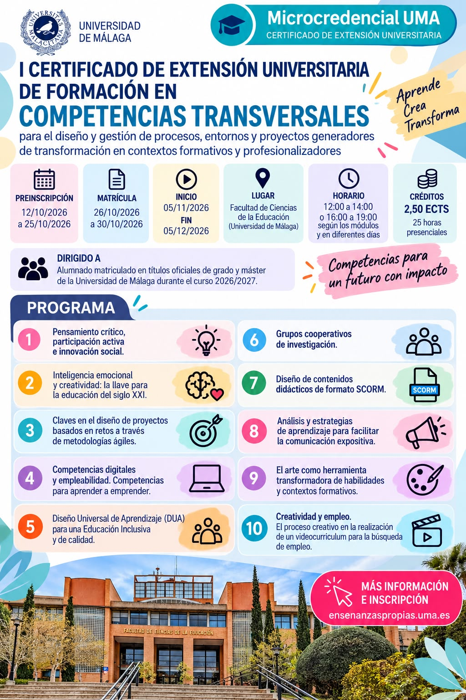

La investigadora de PRACTICE Victoria Márquez imparte parte del I Certificado de Extensión Universitaria en Competencias Transversales de la UMA

Datos del curso
- Matrícula
- Del 26 al 30 de octubre de 2026
- Preinscripción
- Del 12 al 25 de octubre de 2026
- Fechas del curso
- Del 5 de noviembre al 5 de diciembre de 2026
- Lugar
- Facultad de Ciencias de la Educación (UMA)
- Horario
- De 12:00 a 14:00 o de 16:00 a 19:00, según los módulos y en diferentes días
- Duración
- 2,5 ECTS · 25 horas de clase presencial
- Dirigido a
- Alumnado matriculado en títulos oficiales de grado y máster de la Universidad de Málaga durante el curso 2026/2027
La Dra. Victoria Márquez, investigadora del grupo PRACTICE, participa como docente en el I Certificado de Extensión Universitaria de Formación en Competencias Transversales para el diseño y gestión de procesos, entornos y proyectos generadores de transformación en contextos formativos y profesionalizadores, una formación que se imparte en la Facultad de Ciencias de la Educación de la Universidad de Málaga.
El plazo de matrícula está abierto del 26 al 30 de octubre de 2026 y el curso comienza el 5 de noviembre. La propuesta reúne diez módulos que van desde el pensamiento crítico y la innovación social hasta el Diseño Universal de Aprendizaje, las competencias digitales, la creatividad y la empleabilidad.
Programa
- Pensamiento crítico, participación activa e innovación social.
- Inteligencia emocional y creatividad: la llave para la educación del siglo XXI.
- Claves en el diseño de proyectos basados en retos a través de metodologías ágiles.
- Competencias digitales y empleabilidad. Competencias para aprender a emprender.
- Diseño Universal de Aprendizaje (DUA) para una Educación Inclusiva y de calidad.
- Grupos cooperativos de investigación.
- Diseño de contenidos didácticos de formato SCORM.
- Análisis y estrategias de aprendizaje para facilitar la comunicación expositiva.
- El arte como herramienta transformadora de habilidades y contextos formativos.
- Creatividad y empleo. El proceso creativo en la realización de un videocurriculum para la búsqueda de empleo.